大阪市西成区 · 民泊
大阪・西成の民泊
「嘉和（kawa）」／ YOTO STAY
インバウンドゲストの予約はAirbnbから。日本語ページでは、大阪旅行を快適にする旅行グッズの選び方や持ち物リストを、正直に・体験の偽装なしで紹介します。
Airbnbで空室を見る Instagram @kawa.kansai55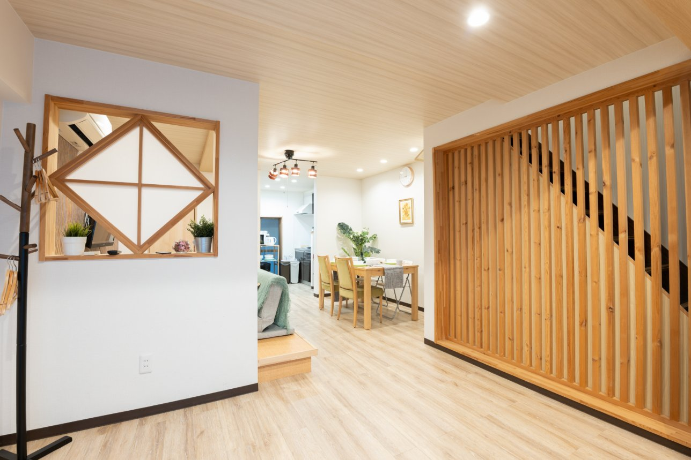
物件情報（Airbnb掲載で確認済み）
物件
一軒家 2LDK。定員 最大10名、2ベッドルーム、ダブルベッド4台。浴室1、トイレ2。
料金の目安
1泊あたり¥12,000〜¥20,000（時期によって変動します）。日程ごとの正確な料金はAirbnbでご確認ください。
アクセス
花園町駅から徒歩5分。掲載では難波15分、梅田20分、USJ25分。
チェックイン／アウト
チェックイン 16:00以降、チェックアウト 12:00前。スマートロックでセルフチェックイン。最低3泊から。
設備
キッチン、Wi-Fi、専用ワークスペース、洗濯機、エアコン、浴槽、テレビなど（掲載設備の一部）。
駐車場
専用駐車場なし。徒歩1分のコインパーキング（敷地外の有料駐車場）の案内が掲載にあります。
ハウスルール
禁煙、ペット不可、パーティー不可。静粛時間 20:00〜09:00。土足厳禁、畳の上にスーツケースを置かないこと、ゴミは分別して室内に置いたままにすること、チェックアウト時の施錠をお願いしています。
Airbnb上では Superhost、評価5.0（レビュー22件）、Guest favorite と表示されています。掲載では2026年4月の全面改装、温泉・サウナは近隣の共有施設との記載があります。予約前にAirbnb掲載の最新情報をご確認ください。
室内の様子
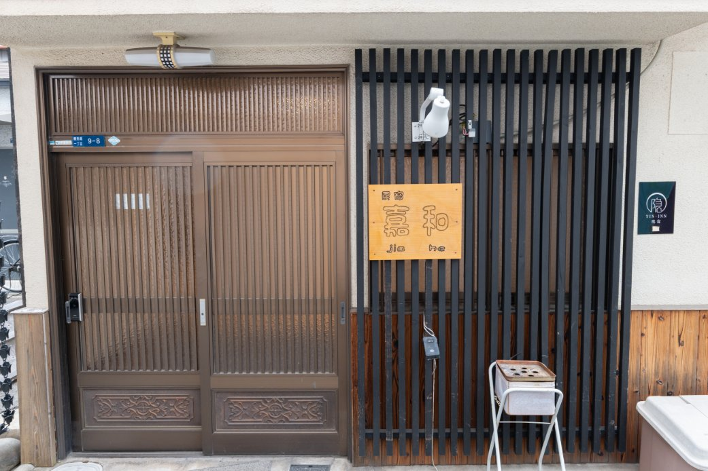
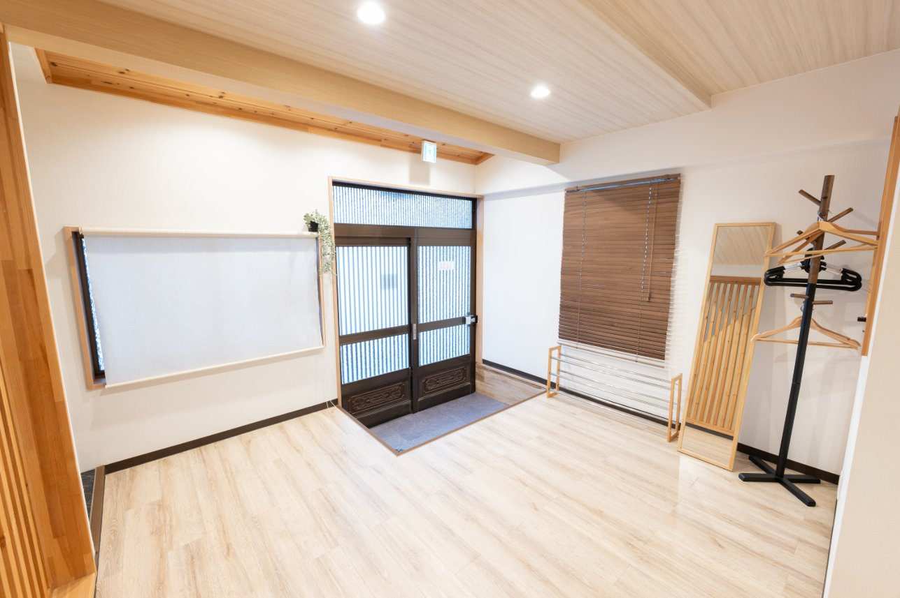
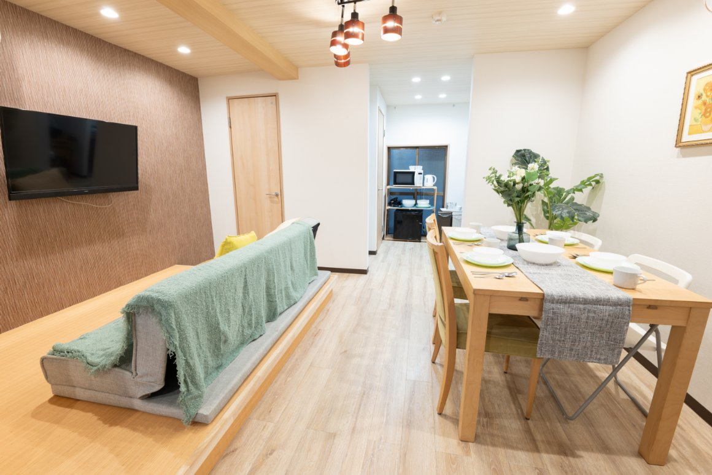
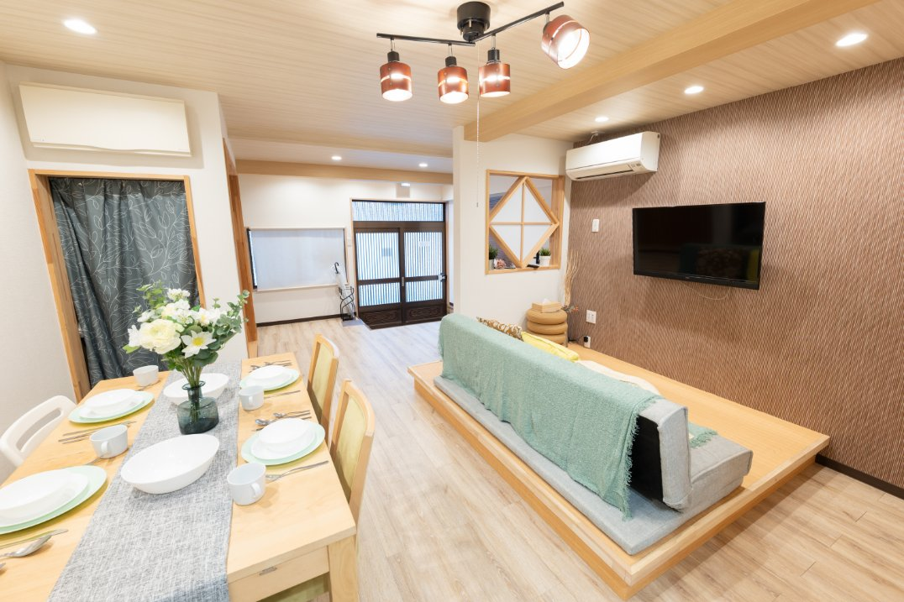
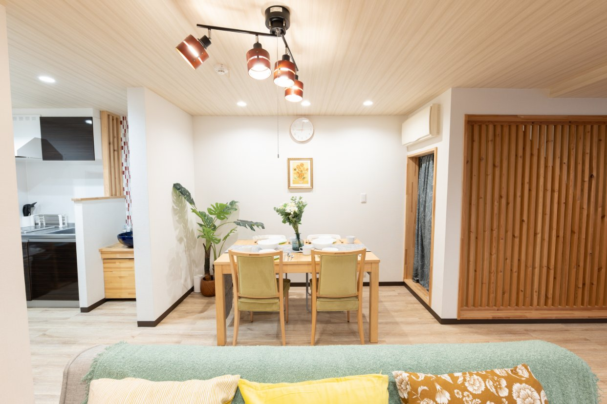
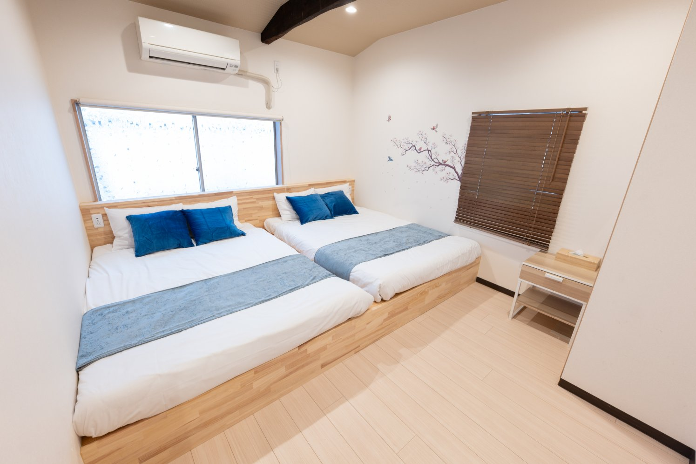
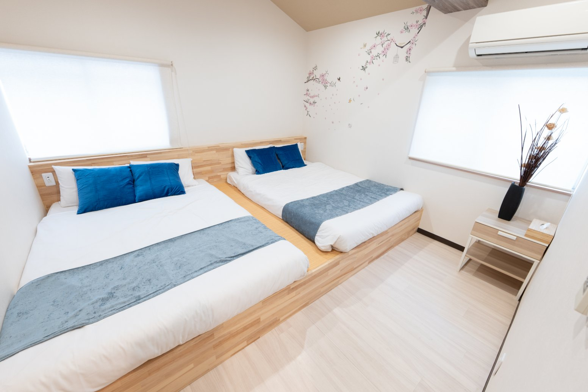
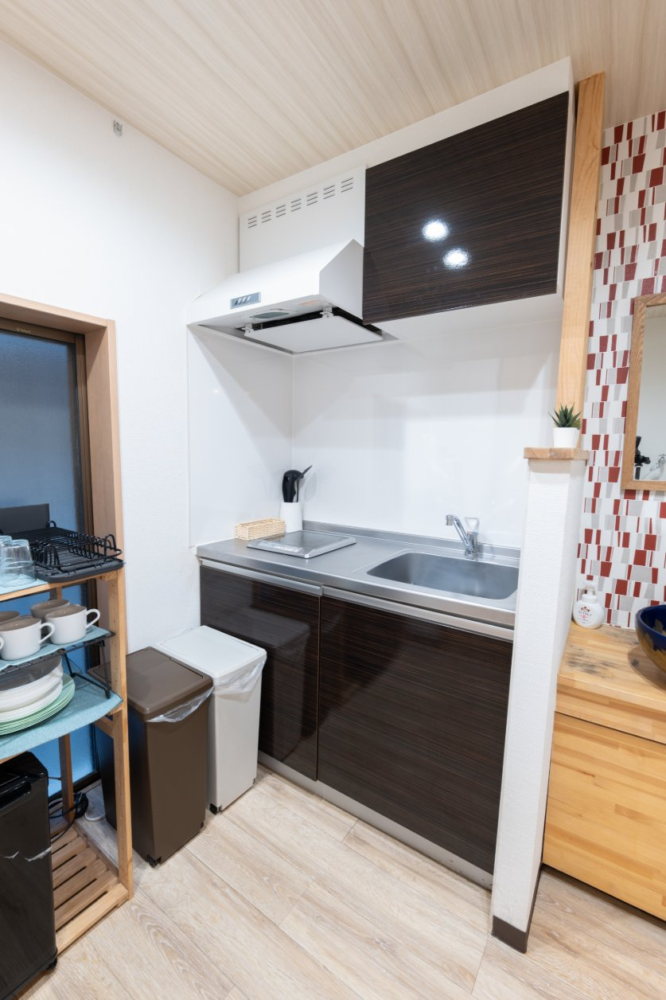
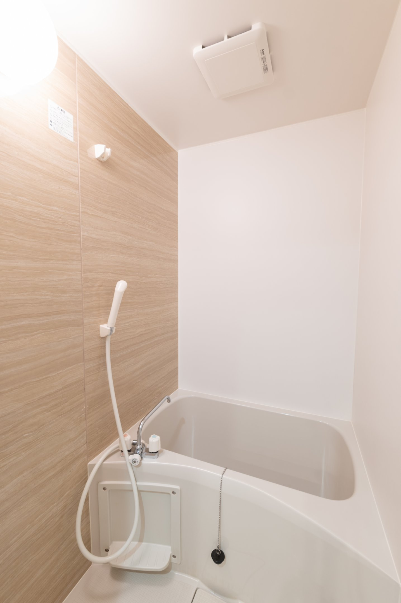
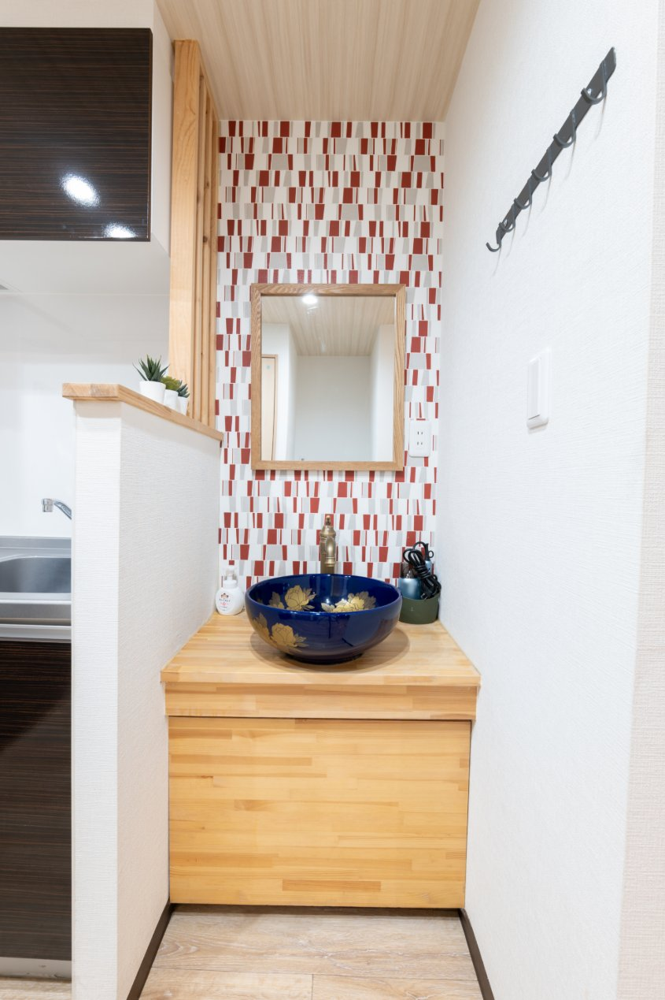
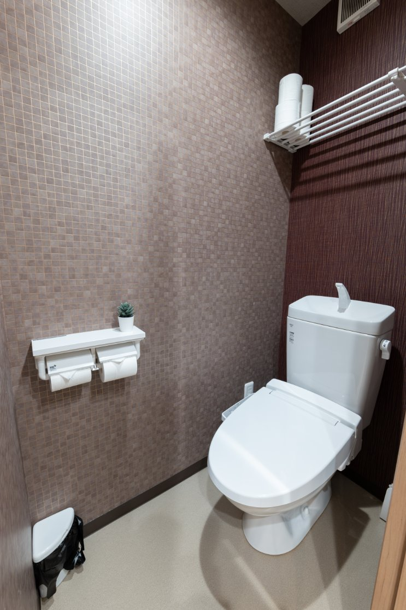
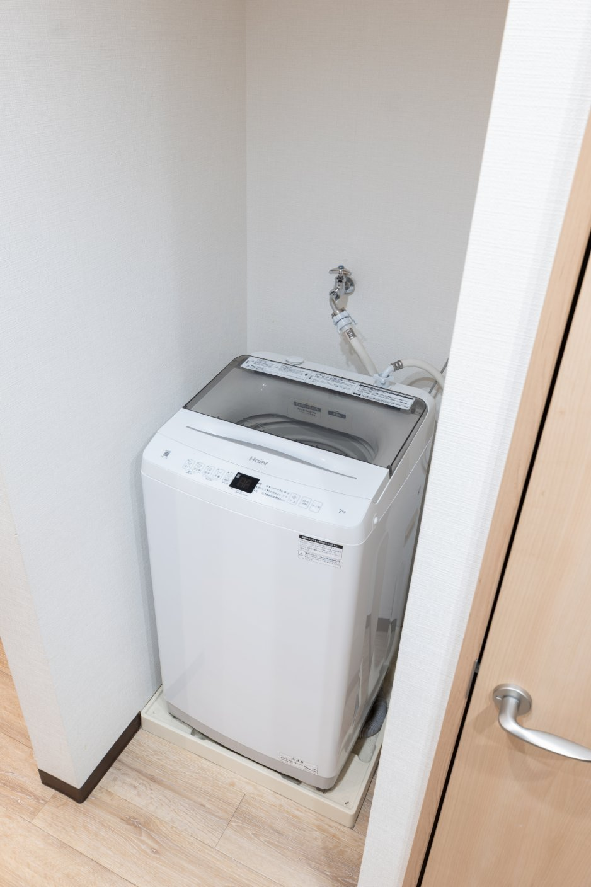
広告について
当サイトはアフィリエイト広告を利用する場合があります。詳細は各記事と下記の開示をご覧ください。
広告開示：当サイトの日本語記事には、楽天アフィリエイト／もしもアフィリエイト／A8.net等の成果報酬型広告リンクを含む場合があります。リンク経由で購入されても、読者の負担額は変わりません。